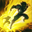
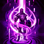

A continuación se mostrarán los hechizos de invocador en League of Legends:
Curación
Este hechizo cura al lanzador y al campeón aliado más cercano al cursor, priorizando al más herido. Y también otorga un extra de velocidad de movimiento.
Fantasmal
Al utilizar este hechizo, tu campeón consigue un extra de velocidad de movimiento durante 10 segundos.
Barrera
Protege a tu campeón con un escudo durante 2 segundos.
Extenuación
Agota al campeón enemigo, ralentizándolo y reduciendo su daño en un 40% durante 2.5 segundos.
Marca
Lanza una bola de nieve, y si consigue impactar, al volver a utilizarla te permite lanzarte sobre el objetivo alcanzado.
Claridad
Restaura el 50% de maná máximo para ti y un 25% para los aliados cercanos.
Destello
 Teletransporta a tu campeón una corta distancia hacia la ubicación de tu cursor.
Teleportación
 Después de canalizar durante 4 segundos, teletransporta a tu campeón a la torreta o súbdito seleccionado. Es utilizable en todo el mapa.
Castigo
Castigo o aplastar permite causar entre 390-1000 de daño dependiendo del nivel de tu campeón sobre cualquier súbdito o monstruo épico de la jungla.
Purificación
Elimina todas las incapacidades y debilitaciones de hechizos de invocador que afectan a tu campeón.
Ignición
Incinera a un campeón enemigo, causando entre 70-410 de daño según el nivel de tu campeón durante 5 segundos, produciéndole heridas graves y revelando al rival seleccionado.
 Lanza una bola de nieve, y si consigue impactar, al volver a utilizarla te permite lanzarte sobre el objetivo alcanzado.
Lanza una bola de nieve, y si consigue impactar, al volver a utilizarla te permite lanzarte sobre el objetivo alcanzado.